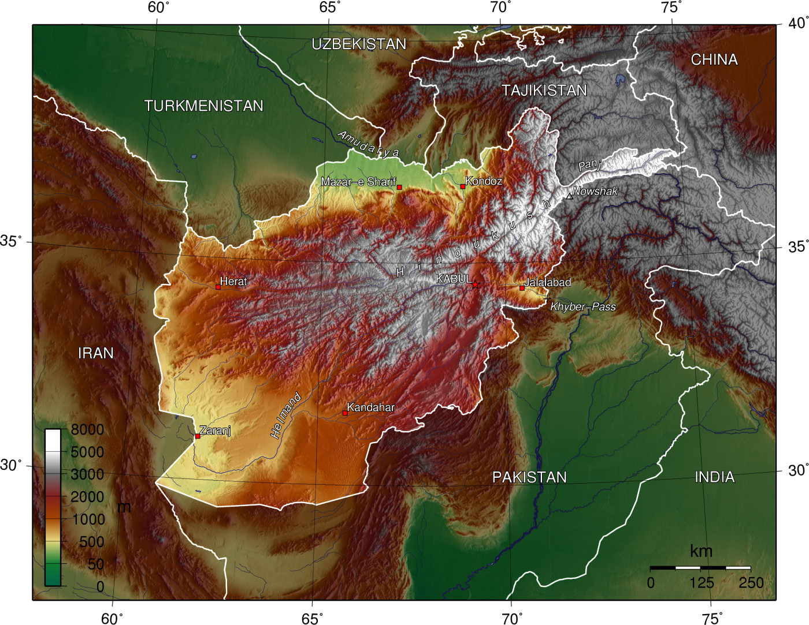

ACLED-Style Research Brief
Does Conflict in Afghanistan Really Spread to Its Neighbors? A Lagged Analysis Based on ACLED Data (2020-2021)
An interactive political science report integrating lagged regression evidence and visual diagnostics.
Chen Yilu
POLI3148 (25-26 Semester2),HKU
Introduction
When you hear that a neighboring country is falling into conflict, is your first reaction to run away? According to earlier studies, your choice might actually be the right one.
Modern political science holds that civil conflicts are transnational and contagious rather than border-contained, with a "bad neighborhood" effect raising conflict risk for states in unstable regions regardless of domestic institutions (Parlar Dal, 2016). Conflict diffusion splits into intentional and unintentional spillovers. The former involves actors deliberately exporting conflict or using cross-border sanctuaries (Parlar Dal, 2016; Prillaman, 2003). The latter refers to unintended spillovers like refugee inflows, infrastructure damage, and violence severity driving regional risks (Parlar Dal, 2016; Yu et al., 2024). Research on Spatial Spillovers of Violent Conflict (SSVCs) identifies a distance decay pattern, where conflict impacts peak 50 to 100 km inland rather than at borders (Yu et al., 2024). Economically, direct neighbors suffer growth losses, while indirect neighbors may gain via trade substitution (De Groot, 2010). Zhou and Shaver (2021) revise the refugee and conflict link, noting that concentrated refugee sites can boost local infrastructure. For Afghanistan, cross-border ethnic ties accelerate spillover (Parlar Dal, 2016).
However, by looking at how Afghanistan's 2020 conflict affected the stability of its neighboring countries, this study offers a counterexample to the common wisdom above.
Data and Methodology
The lagged design in Figure 1 shows how Afghanistan's political violence intensity at month t aligns with the average neighbor events in month t+1. The annotation highlights the one-month lag alignment window. This lagged structure is crucial for separating spillover effects in a temporal sense.
This study utilizes primary data from ACLED. ACLED generates its data by systematically coding local media, NGO reports, and verified new media into precise, event-level entries with exact dates and coordinates. For this analysis, I retrieved all political violence events strictly filtered for Afghanistan and its six contiguous land neighbors from January 1, 2020, to January 31, 2021. These raw, disaggregated records were then cleaned and aggregated into monthly total event counts per country to operationalize our lagged regression design.
To evaluate the spatial diffusion of conflict, I employ a lagged Ordinary Least Squares (OLS) regression methodology. Specifically, the model tests whether the intensity of political violence in Afghanistan (the primary conflict node) at time t serves as a significant predictor of violence levels in its six neighboring states, namely Turkmenistan, Uzbekistan, Tajikistan, Iran, Pakistan, and China, in the subsequent month (t+1). Using a time lag in the model makes it easier to separate spillover impacts. With this design, we can reliably examine how instability in one country slowly spreads and brings security risks to bordering regions.
The "V-Shape" Trajectory of Afghanistan in 2020
Note. From 20 Years in Afghanistan - The Taliban, the War on Terror and the Cost of War（阿富汗20年 — 塔利班、反恐戰和戰爭的代價）, 2021, BBC NEWS 中文. Copyright by GETTY IMAGES.
Note. From 20 Years in Afghanistan - The Taliban, the War on Terror and the Cost of War（阿富汗20年 — 塔利班、反恐戰和戰爭的代價）, 2021, BBC NEWS 中文. Copyright by GETTY IMAGES.
Political violence events in Afghanistan in 2020 show a clear "V-shape" pattern. At the beginning of the year, the number stayed at a high level of over 1,000 events. It then fell sharply to the lowest point of the year in April and May, with only around 550 to 575 events. After that, the numbers kept climbing through the second half of the year and hit another peak of around 1,050 events in October.
The heavy fighting at the start of the year happened because the negotiations between the United States and the Taliban had entered their final sprint (BBC News, 2020). To gain more leverage at the negotiation table, the Taliban launched large-scale attacks in January, while the U.S. military also stepped up its airstrikes.
The low values in April and May were caused by several factors working together. First, on February 29, the United States and the Taliban signed the Doha Agreement. (U.S. Department of State, 2020a). The deal required the U.S. military to begin withdrawing, and the Taliban promised not to attack U.S. forces or major cities. Although attacks on the Afghan government army continued through March and April, the scale and frequency of military actions fell because of the lingering momentum of the "Reduction in Violence" week (Afghanistan Analysts Network, 2020). Second, the COVID-19 outbreak in 2020 reached its first peak in Afghanistan in April and May, and major cities like Kabul were placed under lockdown. The pandemic not only restricted the movement and supply lines of armed groups but also made it harder for journalists to move around and record violent events. In addition, conflict in Afghanistan is shaped by special cultural and religious factors. Ramadan in 2020 fell from late April to late May (BBC, 2020), and on May 24, the Taliban announced a three-day ceasefire for Eid (UN News, 2020).
Because the deeper conflicts between the different parties were never fully resolved, fighting came back in large numbers during the second half of the year. In early October, the Taliban launched their largest strategic offensive since the agreement in Helmand and Kandahar provinces (The New York Times, 2020), trying to capture the provincial capital Lashkar Gah. The battle lasted for weeks and triggered intense ground combat along with U.S. airstrikes. As the United States gradually closed bases and pulled troops out according to the agreement, the Taliban began to take over the power vacuum left in rural areas, where they clashed frequently with the Afghan National Defense and Security Forces (ANDSF) (U.S. Department of State, 2020b).
The Baseline Violence Gap Among Neighbors
The baseline levels of violence among Afghanistan's neighbors differ greatly. Pakistan (the orange line) records far more events than the others, staying between 40 and 75 events throughout the year. China and Iran sit in the middle range, while Turkmenistan, Uzbekistan, and Tajikistan record very few events, usually below 10.
China shows a noticeable peak in the month that corresponds to Afghanistan's fourth month (May 2020), with around 60 events.
In early May 2020, China and Indian have skirmishes at Pangong Tso in the Ladakh region and at Naku La along the Sikkim border (Reuters, 2024). In late May 2020, China's National People's Congress announced that it would review the Hong Kong National Security Law, which directly triggered a sharp rebound in street protests in Hong Kong (Wang & Yu, 2020). At the same time, May 2020 was the month when mainland China fully tried to restart its economy after the first wave of pandemic lockdowns. Because of unpaid wages and the closure of small businesses during the earlier shutdown, a number of small-scale labor protests broke out across mainland China in May (ACLED, 2020). Although each protest was small in size, ACLED's detailed data collection for China meant that these events added up to a meaningful share of the total count.
Among these, the China-India border clash and the unrest in Hong Kong might partly be a spillover of the instability in Afghanistan. As the United States pulled out of Afghanistan, China may have tried to step into this political vacuum, and India may have hoped to use border conflict to prevent a stronger China-Pakistan alliance from expanding its influence in the region. The unrest in Hong Kong could also be linked to the United States trying to continue its offshore balancing strategy in other parts of the Asia-Pacific after losing ground in Afghanistan. However, these ideas are still only guesses at this stage and need more evidence to be supported. The co-occurring fluctuations between China and Afghanistan alone are not enough to draw a solid conclusion.
The Spillover Paradox: A Negative Correlation
The heatmap shows that Afghanistan's events in month t and its neighbors' events in month (t+1) are generally negatively correlated. The correlation with Uzbekistan is -0.60, with Tajikistan it is -0.54, and with China it is -0.54. All six subplots in the scatter plot show regression lines with negative slopes. This means that when political violence rises in Afghanistan, its neighbors tend to record fewer violent events in the following month instead of more.
Why does this negative correlation appear? First, when the fighting inside Afghanistan
intensifies, neighbors like China and Tajikistan may quickly activate emergency plans (ICC China, 2020), seal off the border, and step up military alert. Second, during these high-intensity phases, transnational armed groups may be concentrating their manpower and resources on the Afghan battlefield, which temporarily reduces their activity in surrounding countries.
Why do the correlations differ across countries? Even though these states all border Afghanistan, the geography itself varies a great deal from one side to another. Their histories and political systems are different, so the degree of influence is also different. The shape of the border matters too, since a high mountain range can make it much harder for people and information to move across.

Note. From Topographic map of Afghanistan, by Captain Blood, 2008, Wikimedia Commons. CC BY-SA 3.0.
Discussion and Limitations
Table 1. OLS Lagged Regression Summary by Neighbor
| Country | Beta | p-value | R² | Significant (0.05) | N |
|---|---|---|---|---|---|
| Turkmenistan | -0.0015 | 0.3321 | 0.0941 | False | 12 |
| Uzbekistan | -0.0074 | 0.0395 | 0.3590 | True | 12 |
| Tajikistan | -0.0030 | 0.0714 | 0.2891 | False | 12 |
| Iran | -0.0015 | 0.9343 | 0.0007 | False | 12 |
| Pakistan | -0.0050 | 0.7609 | 0.0097 | False | 12 |
| China | -0.0439 | 0.0721 | 0.2878 | False | 12 |
The sample size of this study is small, covering only 13 months. It is also possible that a one-month lag is either too short or too long to capture the true dynamics of diffusion.
Conclusion
The mainstream media often warns that instability in Afghanistan will drag all of Central and South Asia into chaos, and such predictions often drive investors and capital out of the region. The analysis above, based on ACLED data, pushes back against this kind of blind panic. In reality, a local fire in Afghanistan does not automatically mean an immediate disaster for its neighbors. If the entire database were analyzed in depth, it could even be possible to build a prediction app that uses conflict data from neighboring regions to estimate the future stability of a given area.
Could this negative correlation also be because member states of the Shanghai Cooperation Organization (SCO) share real-time intelligence and jointly suppress the spread of violence? Future research could try to explore this question. If the negative correlation turns out to be stronger among SCO members than among non-members, it will prove the real-world value of regional security cooperation mechanisms and push forward stronger multilateral defense cooperation.
References
ACLED. (2020). Disorder in East Asia: New data for 2019-2020. https://acleddata.com/report/disorder-east-asia-new-data-2019-2020
Afghanistan Analysts Network. (2020, February 24). The‘Reduction in Violence’week: What did some of the people think? https://www.afghanistan-analysts.org/en/reports/war-and-peace/the-reduction-in-violence-week-what-did-some-of-the-people-think/
BBC News. (2020, February 29). US-Taliban deal: US and Taliban sign historic agreement. https://www.bbc.com/news/world-asia-51689443
BBC. (2020). Ramadan timetable 2020. https://www.bbc.co.uk/programmes/articles/4yRQstxpp0LLz5dMgD12P0G/ramadan-timetable-2020
De Groot, O. J. (2010). The spillover effects of conflict on economic growth in neighbouring countries in Africa. Defence and Peace Economics, 21(2), 149-164.
ICC China. (2020). The Evolution and Path Selection of Security Cooperation between China and Central Asian Countries from a Composite Security Perspective. https://www.icc.org.cn/publications/policies/2517.html
Parlar Dal, E. (2016). Impact of the transnationalization of the Syrian civil war on Turkey: Conflict spillover cases of ISIS and PYD-YPG/PKK. Cambridge Review of International Affairs, 29(4), 1396-1420.
Prillaman, W. C. (2003). Colombia's crisis: New thinking on an old problem. Orbis, 47(4), 737-746.
Reuters. (2024, October 25). What was India-China military clash in 2020 about? https://www.reuters.com/world/asia-pacific/what-was-india-china-military-clash-2020-about-2024-10-25/
The New York Times. (2020, October 8). Afghan War casualty report: October 2020. https://www.nytimes.com/2020/10/08/magazine/afghan-war-casualty-report-october-2020.html
U.S. Department of State. (2020a, February 29). Joint Declaration between the Islamic Republic of Afghanistan and the United States of America for Bringing Peace to Afghanistan. https://www.state.gov/wp-content/uploads/2020/02/02.29.20-US-Afghanistan-Joint-Declaration.pdf
U.S. Department of State. (2020b). Country reports on terrorism 2020: Afghanistan. https://www.state.gov/reports/country-reports-on-terrorism-2020/afghanistan/
UN News. (2020, May 24). UN chief welcomes Eid ceasefire in Afghanistan. https://news.un.org/en/story/2020/05/1064852
Wang, V., & Yu, E. (2020, May 24). Defying ban, thousands protest in Hong Kong over China’s security law. The New York Times. https://www.nytimes.com/2020/05/24/world/asia/hong-kong-protest-coronavirus-china.html
Yu, Q., Qu, Y., Zhang, L., Yao, X., Yang, J., Chen, S., ... & Liu, S. (2024). Spatial spillovers of violent conflict amplify the impacts of climate variability on malaria risk in sub-Saharan Africa. Proceedings of the National Academy of Sciences (PNAS), 121(15), e2309087121.
Zhou, Y. Y., & Shaver, A. (2021). Reexamining the effect of refugees on civil conflict: A global subnational analysis. American Political Science Review, 115(4), 1175-1196.